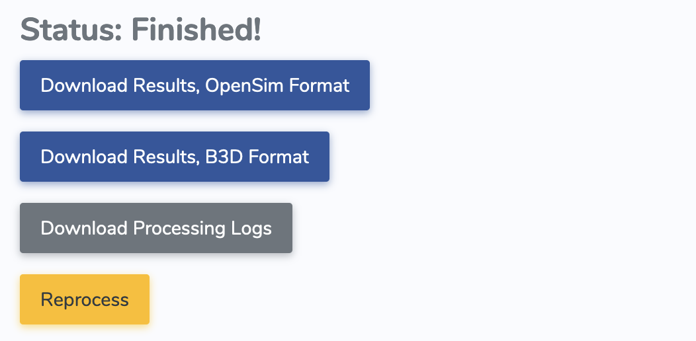

Working with AddBiomechanics Data
You can process motion capture in AddBiomechanics, and get binary files out. If you process a subject using dynamics, you’ll see the following button appear:
{kind=link}
If you click to download this file, you’ll get a single *.bin file. This file is laid out on disk so
that you can efficiently load frames at random from the file, without loading the entire file into memory. This
is helpful for training ML systems on large amounts of training data, which might otherwise overwhelm the amount
of RAM available on your machine.
To load a file at your/path/your_subject_name.bin, simply instantiate a your_subject = nimble.biomechanics.SubjectOnDisk("your/path/your_subject_name.bin").
Note that instantiating SubjectOnDisk does not load all the trials into memory, it merely keeps a lightweight index of the file in memory, which can then load
arbitrary frames of trials quickly and efficiently. It’s safe to load an enormous number of SubjectOnDisk files simultaneously, even with very limited RAM.
Once you have a SubjectOnDisk, the main point of a SubjectOnDisk is to load arrays of Frame objects by calling frames = your_subject.loadFrames(...).
Each Frame contains all the information to set the state of the skeleton corresponding to this subject, which you can get copies of by calling skel = your_subject.readSkel(...).
With a skeleton set in the correct state, with contact and dynamics information known, you’re ready to derive any additional information you need to train your ML system!
- class nimblephysics.biomechanics.SubjectOnDisk
This is for doing ML and large-scale data analysis. The idea here is to create a lazy-loadable view of a subject, where everything remains on disk until asked for. That way we can instantiate thousands of these in memory, and not worry about OOM’ing a machine.
- getContactBodies(self: nimblephysics_libs._nimblephysics.biomechanics.SubjectOnDisk) List[str]
A list of the
body_name’s for each body that was assumed to be able to take ground-reaction-force from force plates.
- getCustomValueDim(self: nimblephysics_libs._nimblephysics.biomechanics.SubjectOnDisk, valueName: str) int
This returns the dimension of the custom value specified by
valueName
- getCustomValues(self: nimblephysics_libs._nimblephysics.biomechanics.SubjectOnDisk) List[str]
A list of all the different types of custom values that this SubjectOnDisk contains. These are unspecified, and are intended to allow an easy extension of the format to unusual types of data (like exoskeleton torques or unusual physical sensors) that may be present on some subjects but not others.
- getHref(self: nimblephysics_libs._nimblephysics.biomechanics.SubjectOnDisk) str
The AddBiomechanics link for this subject’s data.
- getNotes(self: nimblephysics_libs._nimblephysics.biomechanics.SubjectOnDisk) str
The notes (if any) added by the person who uploaded this data to AddBiomechanics.
- getNumDofs(self: nimblephysics_libs._nimblephysics.biomechanics.SubjectOnDisk) int
This returns the number of DOFs for the model on this Subject
- getNumTrials(self: nimblephysics_libs._nimblephysics.biomechanics.SubjectOnDisk) int
This returns the number of trials that are in this file.
- getProbablyMissingGRF(self: nimblephysics_libs._nimblephysics.biomechanics.SubjectOnDisk, trial: int) List[bool]
This returns an array of boolean values, one per frame in the specified trial. Each frame is
Trueif this frame probably has unmeasured forces acting on the body. For example, if a subject steps off of the available force plates during this frame, this will probably be true.WARNING: If this is true, you can’t trust the
tauoraccvalues on the corresponding frame!!This method is provided to give a cheaper way to filter out frames we want to ignore for training, without having to call the more expensive
loadFrames()
- getTrialLength(self: nimblephysics_libs._nimblephysics.biomechanics.SubjectOnDisk, trial: int) int
This returns the length of the trial requested
- getTrialName(self: nimblephysics_libs._nimblephysics.biomechanics.SubjectOnDisk, trial: int) str
This returns the human readable name of the specified trial, given by the person who uploaded the data to AddBiomechanics. This isn’t necessary for training, but may be useful for analyzing the data.
- readFrames(self: nimblephysics_libs._nimblephysics.biomechanics.SubjectOnDisk, trial: int, startFrame: int, numFramesToRead: int = 1) List[nimblephysics_libs._nimblephysics.biomechanics.Frame]
This will read from disk and allocate a number of
Frameobjects. These Frame objects are assumed to be short-lived, to save working memory. For example, you mightreadFrames()to construct a training batch, then immediately allow the frames to go out of scope and be released after the batch backpropagates gradient and loss. On OOB access, prints an error and returns an empty vector.
- readSkel(self: nimblephysics_libs._nimblephysics.biomechanics.SubjectOnDisk, geometryFolder: str = '') nimblephysics_libs._nimblephysics.dynamics.Skeleton
This will read the skeleton from the binary, and optionally use the passed in
geometryFolderto load meshes. We do not bundle meshes withSubjectOnDiskfiles, to save space. If you do not pass ingeometryFolder, expect to get warnings about being unable to load meshes, and expect that your skeleton will not display if you attempt to visualize it.
- static writeSubject(outputPath: str, openSimFilePath: str, trialTimesteps: List[float], trialPoses: List[numpy.ndarray[numpy.float64[m, n]]], trialVels: List[numpy.ndarray[numpy.float64[m, n]]], trialAccs: List[numpy.ndarray[numpy.float64[m, n]]], probablyMissingGRF: List[List[bool]], trialTaus: List[numpy.ndarray[numpy.float64[m, n]]], groundForceBodies: List[str], trialGroundBodyWrenches: List[numpy.ndarray[numpy.float64[m, n]]], trialGroundBodyCopTorqueForce: List[numpy.ndarray[numpy.float64[m, n]]], customValueNames: List[str], customValues: List[List[numpy.ndarray[numpy.float64[m, n]]]], trialNames: List[str] = [], sourceHref: str = '', notes: str = '') None
This writes a subject out to disk in a compressed and random-seekable binary format.
- class nimblephysics.biomechanics.Frame
This is for doing ML and large-scale data analysis. This is a single frame of data, returned in a list by
SubjectOnDisk.readFrames(), which contains everything needed to reconstruct all the dynamics of a snapshot in time.- property acc
The joint accelerations on this frame.
- property customValues
This is list of
Pair[str, np.ndarray]of unspecified values. The idea here is to allow the format to be easily extensible with unusual data (for example, exoskeleton torques) without bloating ordinary training files.
- property dt
This is the size of the simulation timestep at this frame.
- property groundContactCenterOfPressure
This is a list of pairs of (
body name,CoP), whereCoPis a 3 vector representing the center of pressure for a contact measured on the force plate.CoPis expressed in the world frame.
- property groundContactForce
This is a list of pairs of (
body name,f), wherefis a 3 vector representing the ground-reaction force from a contact, measured on the force plate.fis expressed in the world frame, and is assumed to be acting at the correspondingCoPfrom the same index ingroundContactCenterOfPressure.
- property groundContactTorque
This is a list of pairs of (
body name,tau), wheretauis a 3 vector representing the ground-reaction torque from a contact, measured on the force plate.tauis expressed in the world frame, and is assumed to be acting at the correspondingCoPfrom the same index ingroundContactCenterOfPressure.
- property groundContactWrenches
This is a list of pairs of (
body_name,body_wrench), wherebody_wrenchis a 6 vector (first 3 are torque, last 3 are force).body_wrenchis expressed in the local frame of the body atbody_name, and assumes that the skeleton is set to positions pos.Here’s an example usage .. code-block:
for name, wrench in frame.groundContactWrenches: body: nimble.dynamics.BodyNode = skel.getBodyNode(name) torque_local = wrench[:3] force_local = wrench[3:] # For example, to rotate the force to the world frame R_wb = body.getWorldTransform().rotation() force_world = R_wb @ force_local
Note that these are specified in the local body frame, acting on the body at its origin, so transforming them to the world frame requires a transformation!
- property pos
The joint positions on this frame.
- property probablyMissingGRF
This is true if this frame probably has unmeasured forces acting on the body. For example, if a subject steps off of the available force plates during this frame, this will probably be true.
WARNING: If this is true, you can’t trust the
tauoraccvalues on this frame!!
- property t
The frame number in this trial.
- property tau
The joint control forces on this frame.
- property trial
The index of the trial in the containing SubjectOnDisk.
- property vel
The joint velocities on this frame.